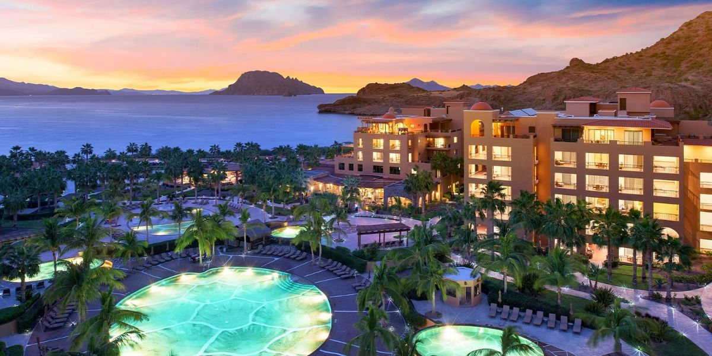

EL GRAN PUEBLO MAGICO DE
LORETO
Baja Californìa Sur
Un poco sobre Loreto:
En el corazón de la península de Baja California Sur se encuentra Loreto. Loreto es uno de los pueblos magícos mas hermosos y sorprendentes de todo mexico. Es un pequeño paraíso aislado del mundo, custodiado por la Sierra de la Giganta y el Mar de Corté, ademas de su riqueza historicaofrece imponentes paisaje naturales e islas con una divercidad de flora y fauna hermosa.
Tambien si hablamos de la vida submarina en loreto, podemos encontrar el avistamiento de la ballena azúl, el perezoso, el delfin rosado, entre muchas espercies mas que forman parte de el gran pueblo de loreto. Un dato sobre este pueblo es que desde Loreto se emprendió el largo peregrinar de la evangelización y la colonización civil de la Baja y la Alta California, encontrándose ejemplos notables de la arquitectura misional en Loreto y sus alrededores.
Loreto es la ciudad más antigua de las Californias, siendo fundada como misión en 1697 por el jesuita Juan María Salvaterra. Desde Loreto se emprendió el largo peregrinar de la evangelización y la colonización civil de la Baja y la Alta California, encontrándose ejemplos notables de la arquitectura misional en Loreto y sus alrededores.
Loreto es la ciudad más antigua de las Californias, siendo fundada como misión en 1697 por el jesuita Juan María Salvaterra. Desde Loreto se emprendió el largo peregrinar de la evangelización y la colonización civil de la Baja y la Alta California, encontrándose ejemplos notables de la arquitectura misional en Loreto y sus alrededores.

¿Qué puedes hacer en Loreto:
Loreto cuenta con multiples atractivos que si piensar viajar a este pueblo te serviran mucho para saber en que pasar tu gran tiempo en vacaciones. Los atractivos que puedes visitar si vas a este gran pueblo magico son:
- Palacio Municipal de loreto.
- Pasea a cabayo en la playa y sus alrededores.
- Misión de Nueva Señpora de Loreto.
- Nopolo, el pueblo secreto.
- Puerto Agua Verde, un oasis silencioso
- ¿Nieve en el mar? El misterioso paisaje de Guerrero Negro
- Practíca SUP Yoga
- Peladea y mira pinturas rupestres
- Playa del burro
- Practica kayak y paddle en el mar
- Disfruta del Parque Nacional Marino Bahía de Loreto
- Misión de San Francisco Javier
- Antigua salinera en la Isla del Carmen
- Sierras de la Giganta y de Guadalupe
- Museo de las Misiones de Baja California
Cuando se le ve de lejos, desde algún punto elevado, el Pueblo Mágico de Loreto impacta por muchas razones. Pareciera ser un lugar donde solo los más afortunados viven.
Loreto conserva la tradición de un poblado pesquero, pero es cosmopolita; se ve apartado de todo, pero hay mucho que hacer; es sencillo, pero tiene cerca uno de los campos de golf top del mundo. El Mar de Cortés y la Sierra de la Giganta son sus joyas más preciadas, pero también presume misiones coloniales y pinturas rupestres. Todo esto te encantará.
Si no pudiste ver el video te compartimos un link para que veas el pueblo de loreto:
Da clic aqui.
¿En donde esta ubicado Loreto?:
Este se ubica en la parte central del estado mexicano de Baja California Sur. Su cabecera municipal es la ciudad de Loreto. se ubica en la parte central del estado mexicano de Baja California Sur. Su cabecera municipal es la ciudad de Loreto.
Está localizado geográficamente dentro de los 26°33'11" N y 25°12'15" latitud norte y 111°46'22’ W y 110°55'15’ longitud oeste, del meridiano de Greenwich. El municipio tiene una extensión de 4,878 km², incluido el territorio de cinco islas que le pertenecen, su litoral es de 223 km.
Según el conteo del INEGI en 1995 había una población municipal de 9,986 habitantes y la cabecera de 8,299.
En el censo del año 2000, el municipio tenía una población de 11,812 habitantes. El conteo de 2005, reportó 11,839 habitantes, residiendo en la cabecera municipal cerca del 87% de la población.
Da click en el mapa para ver donde esta ubicado el gran pueblo magico de Loreto:
 |
Opinión de la autora sobre la pagína: